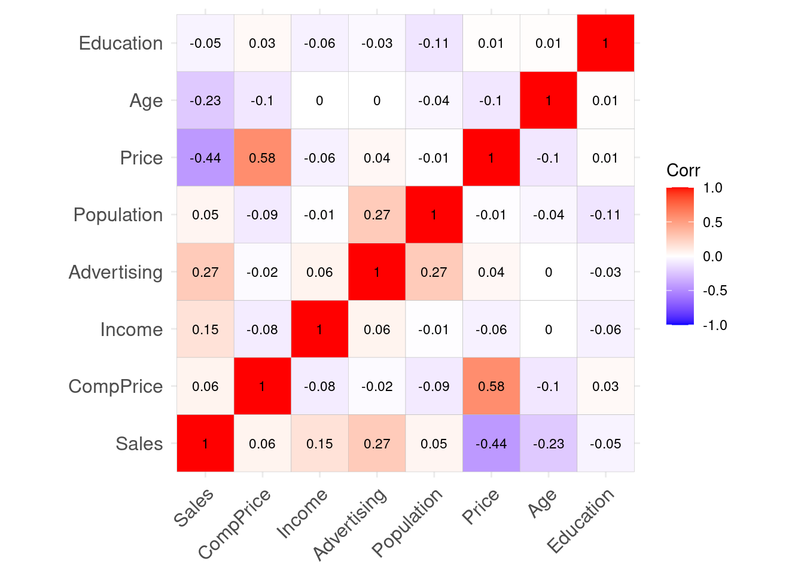
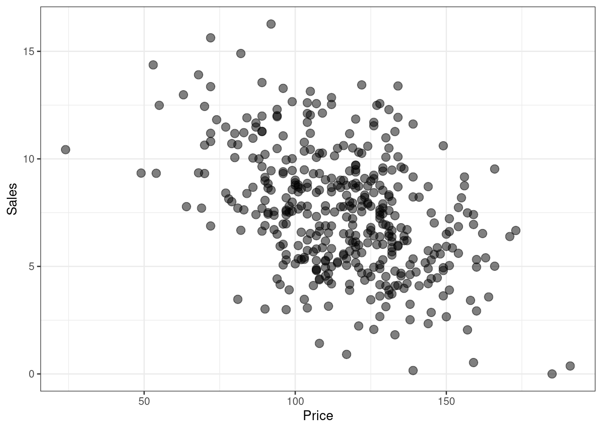
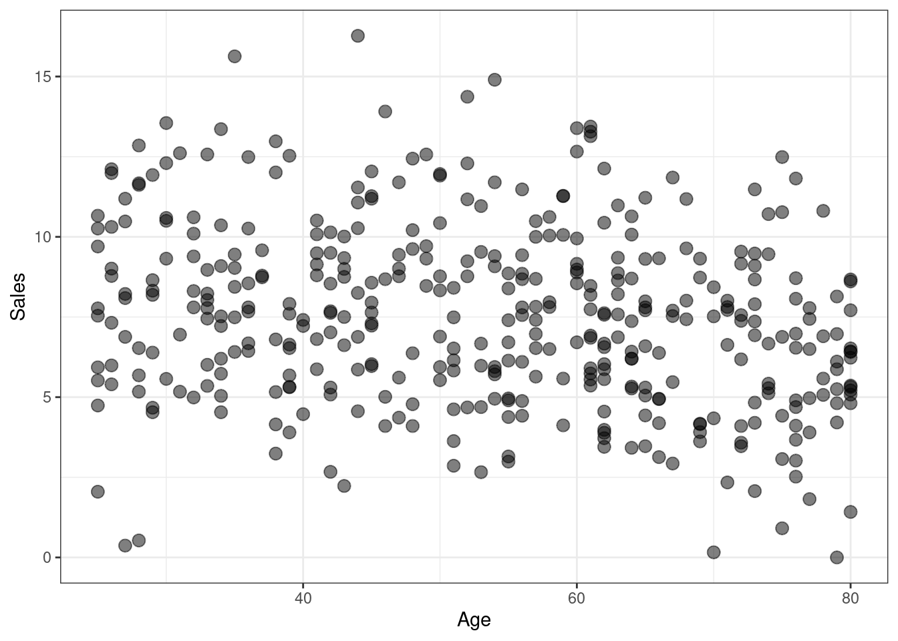
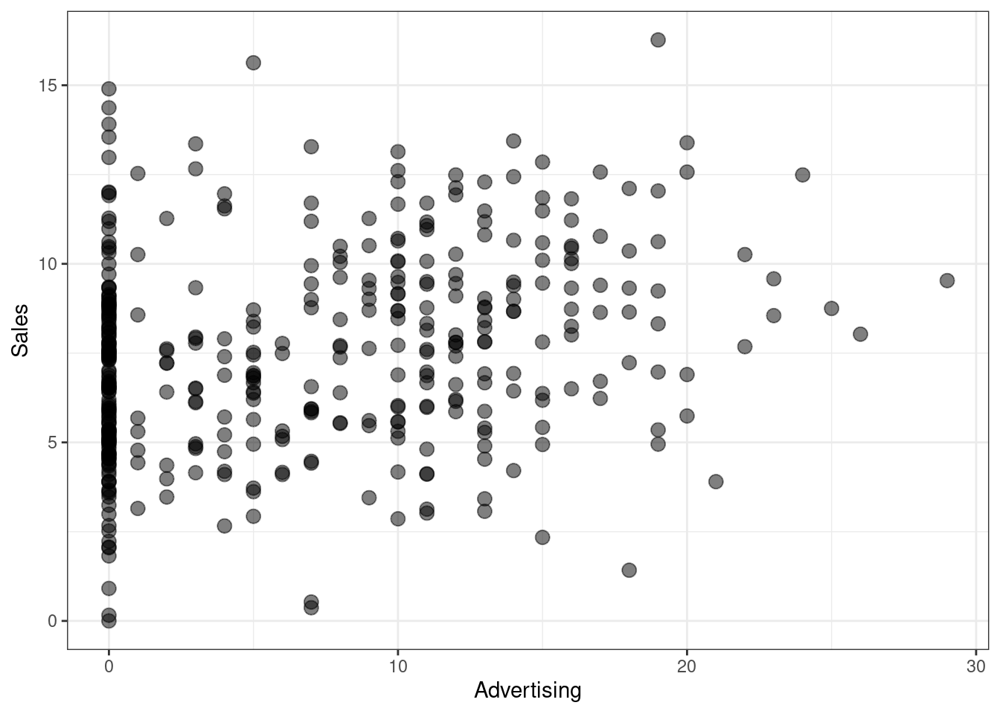
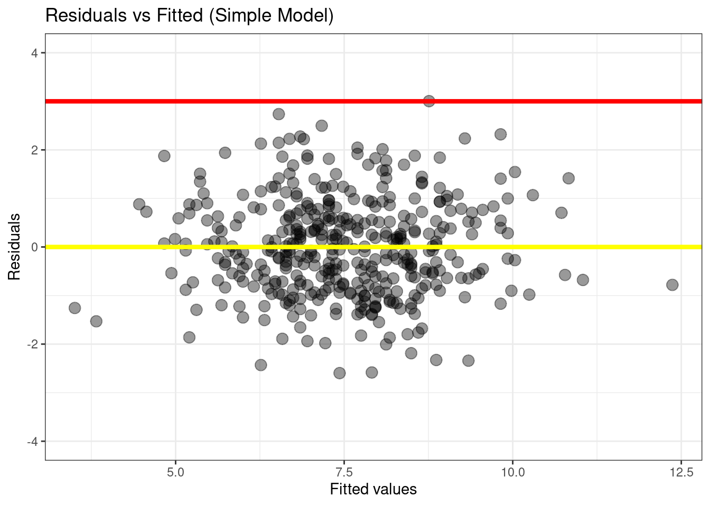

library(car)
library(ISLR2)
library(tidyverse)
# If you use other packages, add them here
library(ggcorrplot)
library(tidymodels) ## to use the tidy() function to extract data from lm models✔️ Formative Problem Set 01 | Solutions
DS202 - Data Science for Social Scientists
⚙️ Setup
Import required libraries.No need to change if you are not planning to use other packages.
üéØ Questions
Use the Carseats data set in the ISLR2 package to answer the following questions:
Q1. Variables
List the names of the variables in this dataset and whether they are quantitative or qualitative. (Worth 1/100 mock marks)
Quantitative:
Sales
CompPrice
Income
Advertising
Population
Price
Age
EducationQualitative:
ShelveLoc
Urban
US
Q2. Dimension
Use R to list the number of rows in the dataset. (Worth 1/100 mock marks)
nrow(Carseats)[1] 400Q3. Visual
Selecting only the quantitative variables, plot the correlation between variables (Worth 5/100 mock marks)
Tip: If you want to use other R packages, add them to the list of libraries at the top.
Carseats_quant <- Carseats %>% select(-c(ShelveLoc, Urban, US))
corr_Carseats <- cor(Carseats_quant)
ggcorrplot(corr_Carseats, lab=TRUE, digits=2, lab_size=3)
Q4. Initial Variable Identification
Based on just an initial inspection of the data, which variables would you select to train an algorithm to predict Sales? Why? (Worth 7/100 mock marks)
Priceis clearly the best first candidate. It is the variable most highly correlated with the dependent variable (Sales) in absolute terms. The correlation betweenPriceandSalesis-0.44. As price increases, sales decreases in an approximately linear fashion.
g <- (
ggplot(Carseats, aes(x=Price, y=Sales))
+ geom_point(size=3, alpha=0.5)
+ theme_bw()
)
g
If we want to add more variables, the next candidates would be
AgeandAdvertising, as these variables also exhibit a correlation withSalesthat is not too close from zero, in absolute terms. Another interesting point about these two variables is the fact that they are not correlated to each other; that is, correlationAgevsAdvertisingandAgevsPriceandPricevsAdvertisingis close to zero.
g <- (
ggplot(Carseats, aes(x=Age, y=Sales))
+ geom_point(size=3, alpha=0.5)
+ theme_bw()
)
g
g <- (
ggplot(Carseats, aes(x=Advertising, y=Sales))
+ geom_point(size=3, alpha=0.5)
+ theme_bw()
)
g
Q5. Simple Linear Regression
Chose ONE SINGLE variable – any variable – and fit a linear regression to predict Sales. Show the summary of this linear model. (Worth 3/100 mock marks)
simple_model <- lm(Sales ~ Price, data=Carseats)
summary(simple_model)
Call:
lm(formula = Sales ~ Price, data = Carseats)
Residuals:
Min 1Q Median 3Q Max
-6.5224 -1.8442 -0.1459 1.6503 7.5108
Coefficients:
Estimate Std. Error t value Pr(>|t|)
(Intercept) 13.641915 0.632812 21.558 <2e-16 ***
Price -0.053073 0.005354 -9.912 <2e-16 ***
---
Signif. codes: 0 '***' 0.001 '**' 0.01 '*' 0.05 '.' 0.1 ' ' 1
Residual standard error: 2.532 on 398 degrees of freedom
Multiple R-squared: 0.198, Adjusted R-squared: 0.196
F-statistic: 98.25 on 1 and 398 DF, p-value: < 2.2e-16Q6. Simple Linear Regression - Interpretation
Provide an interpretation of each coefficient in the model, stating their values, whether they are significant and what they represent. Be careful—some of the variables in the model are qualitative! (Worth 10/100 mock marks)
When
Price = 0, the model predictsSales = 13.64.
For every $100 increase inPrice,Salesdecrease by approximately5.3units.
Both the intercept and the regression coefficient for Price are statistically significant, their p-values are close to zero.
Q7. Simple Linear Regression - Formula
Write the model in equation form, carefully handling the qualitative variables properly. (Worth 5/100 mock marks)
\[Sales = - 0.053073 \times Price + 13.641915 + \epsilon\]
Q8. Multiple Linear Regression
Chose ONLY THREE variables and fit a linear regression to predict Sales. Show the summary of this linear model. (Worth 3/100 mock marks)
multiple_model <- lm(Sales ~ Price + Age + Advertising, data=Carseats)
summary(multiple_model)
Call:
lm(formula = Sales ~ Price + Age + Advertising, data = Carseats)
Residuals:
Min 1Q Median 3Q Max
-6.6247 -1.5288 0.0148 1.5220 6.2925
Coefficients:
Estimate Std. Error t value Pr(>|t|)
(Intercept) 16.003472 0.718754 22.266 < 2e-16 ***
Price -0.058028 0.004827 -12.022 < 2e-16 ***
Age -0.048846 0.007047 -6.931 1.70e-11 ***
Advertising 0.123106 0.017095 7.201 3.02e-12 ***
---
Signif. codes: 0 '***' 0.001 '**' 0.01 '*' 0.05 '.' 0.1 ' ' 1
Residual standard error: 2.269 on 396 degrees of freedom
Multiple R-squared: 0.3595, Adjusted R-squared: 0.3547
F-statistic: 74.1 on 3 and 396 DF, p-value: < 2.2e-16Q9. Multiple Linear Regression - Interpretation
Provide an interpretation of each coefficient in the model, stating their values, whether they are significant and what they represent. Be careful—some of the variables in the model are qualitative! (Worth 10/100 mock marks)
This multiple regression model is statistically significant (p-value associated with the F-statistic is very small). In addition, all regression coefficients were also found to be statistically significant (p-value close to zero).
In the hypothetical scenario in which \(Price = 0\) and \(Age = 0\) and \(Advertising = 0\) , the multiple regression model predicts \(Sales \approx 16\) units.
For every fixed combination of
AgeandAdvertising, an increase in \(100\) dollars inPriceis associated with aSalesdecrease by approximately5.8units.If
PriceandAdvertisingare fixed, theAgeof a car impacts negatively the number of sales. The regression coefficient is \(-0.048846\) , which means we would expectSalesto decrease by \(1\) unit for every \(\approx 20\) years of age of the Car (since \(\frac{1}{0.048846} \approx 20\) ) .
Advertising, on the other hand, is associated with an increase in the number ofSales. IfPriceandAgeare fixed, the model predicts that 12 more items ofSalesfor each increase in \(100\)Advertisingunits (dollars?)
Q10. Multiple Linear Regression - Formula
Write the model in equation form, carefully handling the qualitative variables properly. (Worth 5/100 mock marks)
\[Sales = 16.003472 - 0.058028 \times Price - 0.048846 \times Age + 0.123106 \times Advertising + \epsilon\]
Q11. Model comparison
Which of the two models you created, in questions Q5 and Q8 provide a better fit? (Worth 10/100 mock marks)
The multiple model in Q8 fitted the
Salesdata better.
The adjusted R-squared is higher in the Q8 versus the Q5 model, that is, addingAgeandAdvertisingexplains more of the variance inSalesthan the model with justPrice.We also see a reduction in the Residual Standard Error.
This is also somewhat apparent from the diagnostic plot of residual vs fitted (shown below). The standardized residuals look more concentrated around zero, on the multiple model.
plot_df <- data.frame(fitted_vals=predict(simple_model),
residuals=rstudent(simple_model))
g <- (
ggplot(plot_df, aes(x=fitted_vals, y=residuals))
# Add dots
+ geom_point(alpha=0.4, size=3.5)
+ xlab("Fitted values")
+ ylab("Residuals")
+ ylim(c(-4,4))
+ ggtitle("Residuals vs Fitted (Simple Model)")
# Add lines
+ geom_hline(yintercept=0, size=1.5, color='yellow')
+ geom_hline(yintercept=3, size=1.5, color='red')
# Customising the plot +
+ theme_bw()
)Warning: Using `size` aesthetic for lines was deprecated in ggplot2 3.4.0.
ℹ Please use `linewidth` instead.g
plot_df <- data.frame(fitted_vals=predict(multiple_model),
residuals=rstudent(multiple_model))
g <- (
ggplot(plot_df, aes(x=fitted_vals, y=residuals))
# Add dots
+ geom_point(alpha=0.4, size=3.5)
+ xlab("Fitted values")
+ ylab("Residuals")
+ ylim(c(-4, 4))
+ ggtitle("Residuals vs Fitted (Multiple Model)")
# Add lines
+ geom_hline(yintercept=0, size=1.5, color='yellow')
+ geom_hline(yintercept=3, size=1.5, color='red')
# Customising the plot +
+ theme_bw()
)
g
Q12. Collinearity
What is the Variance Inflation Factor (VIF) of each variable? (Worth 3/100 mock marks)
Considering only the model built on Q8:
vif(multiple_model) Price Age Advertising
1.012538 1.010550 1.001987 Alternatively, if you interpreted the question to refer to all variables, the following would also be accepted:
vif(lm(Sales ~ ., data=Carseats)) GVIF Df GVIF^(1/(2*Df))
CompPrice 1.554618 1 1.246843
Income 1.024731 1 1.012290
Advertising 2.103136 1 1.450219
Population 1.145534 1 1.070296
Price 1.537068 1 1.239785
ShelveLoc 1.033891 2 1.008367
Age 1.021051 1 1.010471
Education 1.026342 1 1.013086
Urban 1.022705 1 1.011289
US 1.980720 1 1.407380Q13. Collinearity (cont.)
Based on your responses to Q3 and the output of Q12, would you consider ignoring any variables when building a linear model? Why/Why not? (Worth 7/100 mock marks)
In terms of
vif– which measures the linear dependency of each predictor to ALL the other predictors – there are no “problematic variables”. If there were, we would find variables withvifabove 5 or 10.In terms of pairwise collinearity (plot in Q3), we also don’t find any problematic colinearities.
Q14. Modelling
Considering ALL possible combinations of TWO variables in this dataset, find the one linear model that has the smallest Residual Standard Error. Explain how you reached that conclusion, show us the summary of that model and write the model in equation form. (Worth 15/100 mock marks)
üí°Tip: Here I show an ‚Äúelegant‚Äù way of solving this question by selecting variables by their names and by using dataframes, the pipe and other R functions. There are simpler ways to solve this question, the simplest perhaps would be to solve it by iterating over the column indices instead of column names. If you did it like that, your answer will be accepted, if done correctly.
# Select all columns in the dataset, except Sales and get a list of their names
all_predictors <- Carseats %>% select(-Sales) %>% names()
all_predictors [1] "CompPrice" "Income" "Advertising" "Population" "Price"
[6] "ShelveLoc" "Age" "Education" "Urban" "US" Use the function combn to produce a list of all possible combination of pairs of predictors. In addition to that, let’s reshape the data and transform it to a nicely formatted dataframe with two columns. Since these columns do not have names, the function as.data.frame() automatically name them V1 and V2.
üí° Tip: type ?combn and hit ENTER in the R console to read more about the combn function.
all_combn_predictors <- combn(all_predictors, 2) %>% t() %>% as.data.frame()
all_combn_predictors V1 V2
1 CompPrice Income
2 CompPrice Advertising
3 CompPrice Population
4 CompPrice Price
5 CompPrice ShelveLoc
6 CompPrice Age
7 CompPrice Education
8 CompPrice Urban
9 CompPrice US
10 Income Advertising
11 Income Population
12 Income Price
13 Income ShelveLoc
14 Income Age
15 Income Education
16 Income Urban
17 Income US
18 Advertising Population
19 Advertising Price
20 Advertising ShelveLoc
21 Advertising Age
22 Advertising Education
23 Advertising Urban
24 Advertising US
25 Population Price
26 Population ShelveLoc
27 Population Age
28 Population Education
29 Population Urban
30 Population US
31 Price ShelveLoc
32 Price Age
33 Price Education
34 Price Urban
35 Price US
36 ShelveLoc Age
37 ShelveLoc Education
38 ShelveLoc Urban
39 ShelveLoc US
40 Age Education
41 Age Urban
42 Age US
43 Education Urban
44 Education US
45 Urban USSo, there are a total of 45 combinations of pairs of features. Now, we need to fit linear regression models for all combinations and compute the Residual Standard Error of each.
How do we get the Residual Standard Error of a model? The R documentation says I can do it with the sigma() function. Read more about it here (or just type ?sigma in the R console and hit ENTER):
sigma(simple_model)[1] 2.532326How do we create these 45 models ? We can iterate over each line of the all_combn_predictors using a for loop, grab the names of the variables and create a linear model with them.
Linear models in R are typically defined as a formula, but how do I build a formula without typing the name of the variables manually? We can do it by using the as.formula as illustrated in this Stackoverflow response.
First, let me show you how the as.formula combined with paste works. Look at all the formulas produced in this loop:
for(i in 1:nrow(all_combn_predictors)){
# get the i-th row of the dataframe
selected_vars <- all_combn_predictors[i,]
# build the formula
model_formula <- as.formula(paste("Sales ~", paste(selected_vars, collapse="+")))
print(model_formula)
}Sales ~ CompPrice + Income
Sales ~ CompPrice + Advertising
Sales ~ CompPrice + Population
Sales ~ CompPrice + Price
Sales ~ CompPrice + ShelveLoc
Sales ~ CompPrice + Age
Sales ~ CompPrice + Education
Sales ~ CompPrice + Urban
Sales ~ CompPrice + US
Sales ~ Income + Advertising
Sales ~ Income + Population
Sales ~ Income + Price
Sales ~ Income + ShelveLoc
Sales ~ Income + Age
Sales ~ Income + Education
Sales ~ Income + Urban
Sales ~ Income + US
Sales ~ Advertising + Population
Sales ~ Advertising + Price
Sales ~ Advertising + ShelveLoc
Sales ~ Advertising + Age
Sales ~ Advertising + Education
Sales ~ Advertising + Urban
Sales ~ Advertising + US
Sales ~ Population + Price
Sales ~ Population + ShelveLoc
Sales ~ Population + Age
Sales ~ Population + Education
Sales ~ Population + Urban
Sales ~ Population + US
Sales ~ Price + ShelveLoc
Sales ~ Price + Age
Sales ~ Price + Education
Sales ~ Price + Urban
Sales ~ Price + US
Sales ~ ShelveLoc + Age
Sales ~ ShelveLoc + Education
Sales ~ ShelveLoc + Urban
Sales ~ ShelveLoc + US
Sales ~ Age + Education
Sales ~ Age + Urban
Sales ~ Age + US
Sales ~ Education + Urban
Sales ~ Education + US
Sales ~ Urban + USNow, let’s actually create the linear models and identify the one with the smallest RSE:
best_RSE <- Inf # we don't know yet
best_predictors <- c() # start empty, fill later
best_model <- NULL # we don't know yet
for(i in 1:nrow(all_combn_predictors)){
# get the i-th row of the dataframe
selected_vars <- all_combn_predictors[i,]
# build the formula
model_formula <- as.formula(paste("Sales ~", paste(selected_vars, collapse="+")))
fitted_model <- lm(model_formula, data=Carseats)
current_model_RSE <- sigma(fitted_model)
if(current_model_RSE < best_RSE){
best_RSE <- current_model_RSE
best_predictors <- selected_vars
best_model <- fitted_model
cat("Found a better model!\n")
cat(paste0(" Vars: [", paste(selected_vars, collapse=","), "]\n"))
cat(paste0(" RSE:", best_RSE, "\n\n"))
}
}Found a better model!
Vars: [CompPrice,Income]
RSE:2.7899309103294
Found a better model!
Vars: [CompPrice,Advertising]
RSE:2.71911905676241
Found a better model!
Vars: [CompPrice,Price]
RSE:2.26880676843526
Found a better model!
Vars: [Advertising,ShelveLoc]
RSE:2.24418017219941
Found a better model!
Vars: [Price,ShelveLoc]
RSE:1.91725333683979As we can see from above, the best model – if we consider only the minimum RSE – is:
summary(best_model)
Call:
lm(formula = model_formula, data = Carseats)
Residuals:
Min 1Q Median 3Q Max
-5.8229 -1.3930 -0.0179 1.3868 5.0780
Coefficients:
Estimate Std. Error t value Pr(>|t|)
(Intercept) 12.001802 0.503447 23.839 < 2e-16 ***
Price -0.056698 0.004059 -13.967 < 2e-16 ***
ShelveLocGood 4.895848 0.285921 17.123 < 2e-16 ***
ShelveLocMedium 1.862022 0.234748 7.932 2.23e-14 ***
---
Signif. codes: 0 '***' 0.001 '**' 0.01 '*' 0.05 '.' 0.1 ' ' 1
Residual standard error: 1.917 on 396 degrees of freedom
Multiple R-squared: 0.5426, Adjusted R-squared: 0.5391
F-statistic: 156.6 on 3 and 396 DF, p-value: < 2.2e-16\[Sales = 12.001802 - 0.056698\times Price + 4.895848 \times ShelveLoc[Good] + 1.862022 \times ShelveLoc[Medium] + \epsilon\]
Teeechnically, the model above has more than just two variables, it uses three variables (two combinations of ShelveLoc. This is because R converts categorical variables to independent binary variables automatically. Since we didn’t distinguish this case in the question, this is an acceptable response.
Q15. Interaction Effects
Use the * and : symbols to fit linear regression models with interaction effects. Could you find any model with interactions that fit better than the models you built in Questions Q5 & Q8 & Q14? Feel free to use as many interactions and variables as you prefer. Justify your answer. Explain how you reached that conclusion, show us the summary of that model and write the model in equation form. (Worth 15/100 mock marks)
üí° Here, you were not expected to test ALL combinations. You could solve this by trial and error, combining multiple combinations of variables until you reached a model with better RSE, R-squared or other metric.
For didactic purposes, I will re-use the solution from Q14 and test all possible linear models with only two variables, this time considering
*and:operator instead of the+operator.I will look for the model that optimizes for RSE.
# Using the tidyverse function crossing
new_combn_predictors <- crossing(all_combn_predictors, tibble(interaction_type=c("*", ":")))
new_combn_predictors# A tibble: 90 × 3
V1 V2 interaction_type
<chr> <chr> <chr>
1 Advertising Age :
2 Advertising Age *
3 Advertising Education :
4 Advertising Education *
5 Advertising Population :
6 Advertising Population *
7 Advertising Price :
8 Advertising Price *
9 Advertising ShelveLoc :
10 Advertising ShelveLoc *
# … with 80 more rowsThis time there are 90 possible combinations:
for(i in 1:nrow(new_combn_predictors)){
# get the i-th row of the dataframe
selected_vars <- new_combn_predictors[i,c("V1", "V2")]
# build the formula
# Notice that this time I will use whatever is in the column `interaction_type`
model_formula <- as.formula(paste("Sales ~", paste(selected_vars, collapse=new_combn_predictors[i, ]$interaction_type)))
print(model_formula)
}Sales ~ Advertising:Age
Sales ~ Advertising * Age
Sales ~ Advertising:Education
Sales ~ Advertising * Education
Sales ~ Advertising:Population
Sales ~ Advertising * Population
Sales ~ Advertising:Price
Sales ~ Advertising * Price
Sales ~ Advertising:ShelveLoc
Sales ~ Advertising * ShelveLoc
Sales ~ Advertising:Urban
Sales ~ Advertising * Urban
Sales ~ Advertising:US
Sales ~ Advertising * US
Sales ~ Age:Education
Sales ~ Age * Education
Sales ~ Age:Urban
Sales ~ Age * Urban
Sales ~ Age:US
Sales ~ Age * US
Sales ~ CompPrice:Advertising
Sales ~ CompPrice * Advertising
Sales ~ CompPrice:Age
Sales ~ CompPrice * Age
Sales ~ CompPrice:Education
Sales ~ CompPrice * Education
Sales ~ CompPrice:Income
Sales ~ CompPrice * Income
Sales ~ CompPrice:Population
Sales ~ CompPrice * Population
Sales ~ CompPrice:Price
Sales ~ CompPrice * Price
Sales ~ CompPrice:ShelveLoc
Sales ~ CompPrice * ShelveLoc
Sales ~ CompPrice:Urban
Sales ~ CompPrice * Urban
Sales ~ CompPrice:US
Sales ~ CompPrice * US
Sales ~ Education:Urban
Sales ~ Education * Urban
Sales ~ Education:US
Sales ~ Education * US
Sales ~ Income:Advertising
Sales ~ Income * Advertising
Sales ~ Income:Age
Sales ~ Income * Age
Sales ~ Income:Education
Sales ~ Income * Education
Sales ~ Income:Population
Sales ~ Income * Population
Sales ~ Income:Price
Sales ~ Income * Price
Sales ~ Income:ShelveLoc
Sales ~ Income * ShelveLoc
Sales ~ Income:Urban
Sales ~ Income * Urban
Sales ~ Income:US
Sales ~ Income * US
Sales ~ Population:Age
Sales ~ Population * Age
Sales ~ Population:Education
Sales ~ Population * Education
Sales ~ Population:Price
Sales ~ Population * Price
Sales ~ Population:ShelveLoc
Sales ~ Population * ShelveLoc
Sales ~ Population:Urban
Sales ~ Population * Urban
Sales ~ Population:US
Sales ~ Population * US
Sales ~ Price:Age
Sales ~ Price * Age
Sales ~ Price:Education
Sales ~ Price * Education
Sales ~ Price:ShelveLoc
Sales ~ Price * ShelveLoc
Sales ~ Price:Urban
Sales ~ Price * Urban
Sales ~ Price:US
Sales ~ Price * US
Sales ~ ShelveLoc:Age
Sales ~ ShelveLoc * Age
Sales ~ ShelveLoc:Education
Sales ~ ShelveLoc * Education
Sales ~ ShelveLoc:Urban
Sales ~ ShelveLoc * Urban
Sales ~ ShelveLoc:US
Sales ~ ShelveLoc * US
Sales ~ Urban:US
Sales ~ Urban * USbest_RSE <- Inf # we don't know yet
best_predictors <- c() # start empty, fill later
best_model <- NULL # we don't know yet
for(i in 1:nrow(new_combn_predictors)){
# get the i-th row of the dataframe
selected_vars <- new_combn_predictors[i,c("V1", "V2")]
# build the formula
# Notice that this time I will use whatever is in the column `interaction_type`
model_formula <- as.formula(paste("Sales ~", paste(selected_vars, collapse=new_combn_predictors[i, ]$interaction_type)))
fitted_model <- lm(model_formula, data=Carseats)
current_model_RSE <- sigma(fitted_model)
if(current_model_RSE < best_RSE){
best_RSE <- current_model_RSE
best_predictors <- selected_vars
best_model <- fitted_model
cat("Found a better model!\n")
cat(paste0(model_formula, "\n"))
cat(paste0(" RSE:", best_RSE, "\n\n"))
}
}Found a better model!
~
Sales
Advertising:Age
RSE:2.77861087594811
Found a better model!
~
Sales
Advertising * Age
RSE:2.65041673414083
Found a better model!
~
Sales
Advertising * Price
RSE:2.40120656790555
Found a better model!
~
Sales
Advertising * ShelveLoc
RSE:2.24885583915041
Found a better model!
~
Sales
Price:ShelveLoc
RSE:1.96438627687265
Found a better model!
~
Sales
Price * ShelveLoc
RSE:1.91821983511205We didn’t find a better model, but we found a model that leads to almost the same RSE as the one in Q14:
summary(best_model)
Call:
lm(formula = model_formula, data = Carseats)
Residuals:
Min 1Q Median 3Q Max
-5.9037 -1.3461 -0.0595 1.3679 4.9037
Coefficients:
Estimate Std. Error t value Pr(>|t|)
(Intercept) 11.832984 0.965788 12.252 < 2e-16 ***
Price -0.055220 0.008276 -6.672 8.57e-11 ***
ShelveLocGood 6.135880 1.392844 4.405 1.36e-05 ***
ShelveLocMedium 1.630481 1.171616 1.392 0.165
Price:ShelveLocGood -0.010564 0.011742 -0.900 0.369
Price:ShelveLocMedium 0.001984 0.010007 0.198 0.843
---
Signif. codes: 0 '***' 0.001 '**' 0.01 '*' 0.05 '.' 0.1 ' ' 1
Residual standard error: 1.918 on 394 degrees of freedom
Multiple R-squared: 0.5444, Adjusted R-squared: 0.5386
F-statistic: 94.17 on 5 and 394 DF, p-value: < 2.2e-16\[ \begin{eqnarray} Sales &=& 11.832984 - 0.055220 \times Price \\ &&+ 6.135880 \times ShelveLoc[Good] \\ &&+1.630481 \times ShelveLoc[Medium] \\ &&-0.010564 \times (Price \times ShelveLoc[Good] ) \\ &&+0.001984 \times (Price \times ShelveLoc[Medium] ) \end{eqnarray} \]